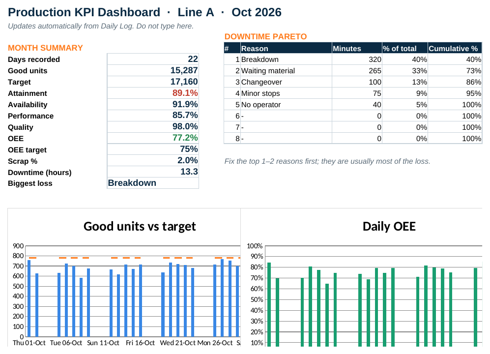
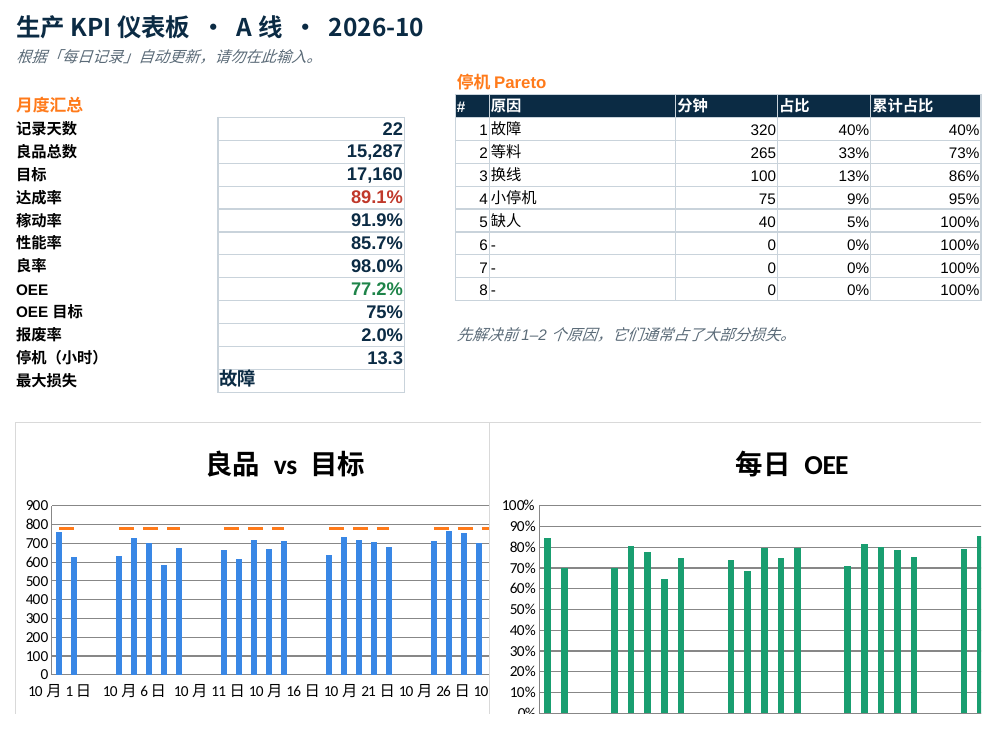

Download the dashboard下载仪表板
DOWNLOAD EXCEL (.XLSX) ↓
下载中文版 Excel（.xlsx）↓
English version. Works in Excel, Google Sheets and WPS.中文版。支持 Excel、Google Sheets 与 WPS。


Preview with the October sample data included in the file.
预览图使用文件中自带的 10 月示例数据。